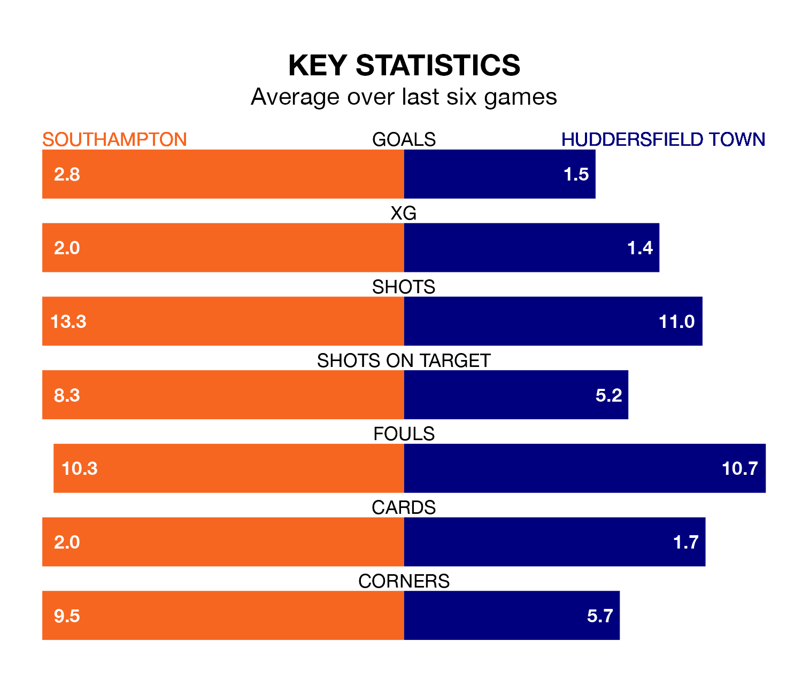

Southampton host Huddersfield Town in Saturday's match at St. Mary's looking to bounce back from defeat last time out in EFL Championship.
The Saints, who sit second in the league after 29 games, fell to a 0-2 away defeat to Rotherham United on February 3.
They face a Huddersfield side who picked up a win in their last match, a 4-0 victory against Sheffield Wednesday, and who sit 21st in the table.
With 55 goals in 29 games so far this season, Southampton are the league's second-highest scorers with 1.9 goals per game. And they are conceding fewer than average, letting in 32 goals at a rate of 1.1 per game.
Huddersfield, meanwhile, are below average scorers, with 1.1 goals per game, compared to a league average of 1.4. They have conceded 1.6 goals per game.
The Saints are in fantastic form in EFL Championship, with five wins and a draw from their last six games.
With a win and three draws over that period, Town's form is much worse – they have taken six points from 18, compared to the home team's 16.
In the last 10 years, Southampton and Huddersfield have played each other on six occasions. Southampton won two of them and they drew four times.
On average, the Saints scored 1.3 goals and the Terriers 0.7 in those matches.
Their last meeting was on November 25, when they played out a 1-1 draw.
In Adam Armstrong, Southampton have one of the league's most on-form strikers so far this season. He has notched 15 goals in 29 appearances, to sit third in the scoring charts.
His goal rate of one every 167 minutes is quicker than that of Michal Helik, the Terriers' top scorer with a goal every 324 minutes, and a total of eight goals in 29 games.
Updated: 14:59 (UTC), 05/02/24